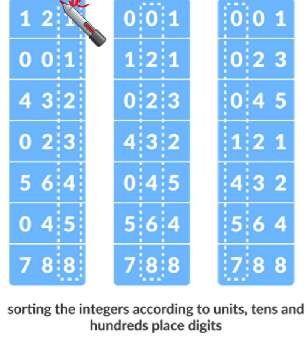

Algorithms Week 5
Linear time sorting
- Comparison-based sorting에 성능적인 한계가 있음
- 이러한 단점을 해결하기 위한 linear-time sorting 기법들이 있음
(Randomized) Quicksort
It behaves as follows:
- If the list has 0 or 1 elements it’s sorted.
- Otherwise, choose a pivot and partition around it.
- Recursively apply quicksort to the sublists to the left and right of the pivot.

void qucikSort (int array[], int l, int r) {
if (l < r) {
int pivot = array[r];
int pos = partition(array, l, r, pivot);
quickSort(array, l, pos - 1);
quickSort(array, pos + 1, r);
}
}Worst-case runtime - \(O(n^{2})\): When pivot = array[r]
Randomized Quicksort
void qucikSort (int array[], int l, int r) {
if (l < r) {
int pivot = array[l + rand() % n];
int pos = partition(array, l, r, pivot);
quickSort(array, l, pos - 1);
quickSort(array, pos + 1, r);
}
}Worst-case - \(O(n^{2})\): Think of this as the adversary chooses the randomness.
Expected - \(O(n\log{n})\)
Initial observations
There’s a really good case, in which partition always picks the median element as the pivot.
There’s a really bad case, in which partition always picks the smallest or largest element as the pivot.
Expected runtime of randomized quicksort
The expected runtime of auicksort is \(O(n\log{n})\)
We can provie it through counting the number of times two elements get compared.
Lower-bound of comparison-based sorting
Sorting
We’ve seen a few sorting algorithms
- Insertion sort is worst-case \(O(n^{2})\)-time.
- Mergesort is worst-case \(O(n\log{n})\)-time.
- Quicksort is worst-case \(O(n\log{n})\)-time.
Comparison-based algorithms use “comparisons” to achieve their output.
- Linear-time select is a comparison-based algorithms.
- quicksort, mergesort, insertionsort
Theorem [Lower bound of \(\ohm(n\log{n})\)]: Any deterministic comparison-based sorting algorithm requires \(\ohm(n\log{n})\)-time?
- Argue that all comparison-based sorting algorithms produce a decision tree. Then analyze decision trees.
Proof:
- Any deterministic comparison-based algorithm can be represented as a decision tree with \(n!\) leaves.
- The worst-case running time is the depth of the decision tree.
- All decision trees with \(n!\) leaves have depth at least \(\ohm(n\log{n})\)
So any comparison-based sorting algorithm must have worst-case running time at least \(\ohm({n\log{n}})\)
Decision tree
The leaves of this tree are all possible orderings of the items: when we reach a leaf we return it.
Running the algorithm on a given input corresponds to taking a particular path through the tree.
Linear-time sorting
If any deterministic comparison-based sorting algorithm requires \(\ohm(n\log{n})\)-time, then what’s this nonsense about linear-time sorting algorithms?
We can achieve \(O(n)\) worst-case runtime if we make assumptions about the input. (e.g. They are integers ranging from 0 to k - 1)
Counting sort, Bucket sort, Radix sort
Counting sort
void countingsort(int array[], int n) {
int count [k + 1];
for (int i = 0; i < k + 1; i++) {
count[i] = 0;
}
for (int i = 0, j = 0; i <= k; i++) {
while(count[i] > 0) {
array[j] = i;
j++;
count[i]--;
}
}
}Assumption: \(\operatorname{input value rance} = [0, k - 1]\)

Bucket sort
similar to the counting sort, but
Might be multiple keys per bucket, so buckets need another stable_sort to be sorted.
static void bucketsort(int array[], int n, int k) {
vector<int> bucket[bucket_number];
for (int i = 0; i < n; i++) {
int b = array[i] / ceil(k / bucket_number);
bucket[b].push_back(array[i]);
}
if (bucket_number < k) {
for (int i = 0; i < bucket_number; i++) {
sort(bucket[i].begin(), bucket[i].end());
}
}
int m = 0;
for (int i = 0; i < bucket_number; i++) {
for (int j = 0; j < bucket[i].size(); j++) {
array[m] = bucket[i][j];
m++
}
}
}worst-case runtime: \(\O(max(n\log{n}, n + k))\)
Two cases for um_buckets and k:
- \(k <= \operatorname{num\_buckets}\): At most one key per bucket, so buckets don’t need another stable_sort to be sorted (similar to counting_sort).
- \(k > \operatorname{num\_buckets}\): Might be multiple keys per buckets, so buckets need another stable_sort to be sorted.
Radix sort
기수정렬

자릿수로 정렬
void radixsort(int array[], int size) {
int max = getMax(array, size);
for (int place = 1; max / place > 0; place *= 10) {
countingSort(array, size, place);
}
}void countingSort(int array[], int size, int place) {
count int max = 10;
int* output = new int[size];
int* count = new int[max];
for (int i = 0; i < max; ++i) {
count[i] = 0
}
for (int i = 0; i < size; i++) {
key = (array[i] / place) % 10;
count[key]++;
}
for (int i = 1; i < max; i++) {
count[i] += count[i - 1];
}
for (int i = size - 1; i >= 0; i--) {
key = (array[i] / place) % 10;
output[count[key] - 1] = array[i];
count[key]--;
}
for (int i = 0; i < size; i++) {
array[i] = output[i];
}
}